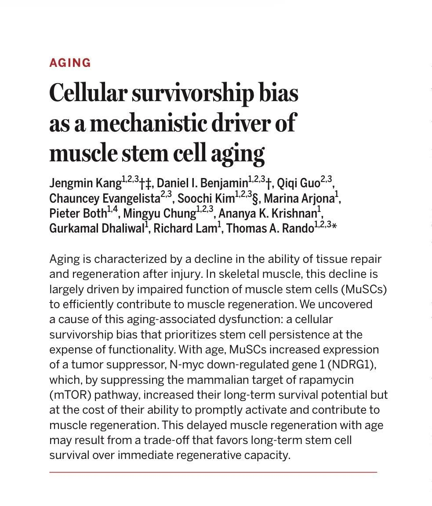
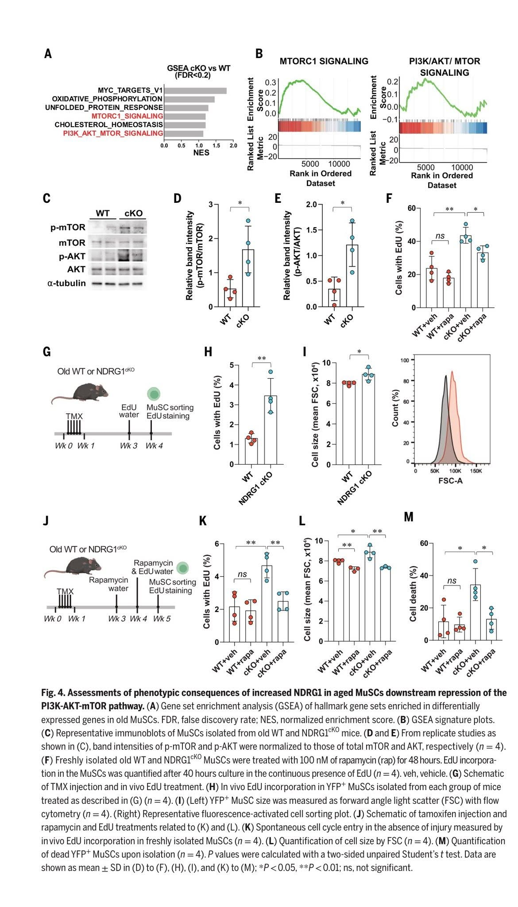
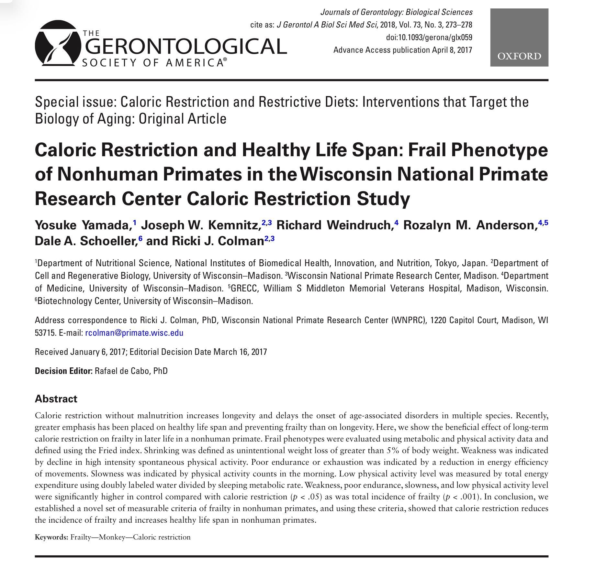
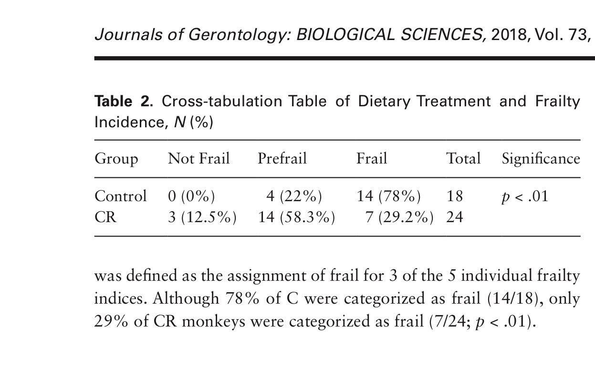

This post is copied from the Rapamycin group. You can find the original post here: facebook.com/share/p/1AnJs7cRhi.
Maintaining high quality muscle as you get older is more complicated than the standard trope from influencers about jacking up mTOR to overcome anabolic resistance.
We’ve known this is true in primates for a while now, from carefully done calorie restriction (CR) studies in rhesus monkeys. Lower anabolic nutrient signaling from CR is protective against sarcopenia and frailty in rhesus monkeys (as it is in mice).
Several recent papers are finally starting to explain the mechanisms why. Spoiler alert: They involve suppressing overactive mTOR in aging muscle. This is exactly what rapamycin does.
#mtorHD #muscleHD #calorierestrictionHD #proteinHD #rapamycinHD #agingHD #longevityHD
Rethinking frailty, muscle, and protein through the lens of aging biology
The dominant public narrative around aging and frailty is deceptively simple:
eat more protein → activate mTOR → resistance exercise → build more muscle → reduce frailty.
What both of these papers show—at very different biological scales—is that this linear logic does not hold up when examined through the biology of aging (science not wishful thinking from longevity doctors and personal trainers)
- Muscle aging is not just decline, but selection
The Science paper by Kang et al. fundamentally reframes muscle stem cell (MuSC) aging as a problem of selection rather than uniform deterioration. With age, MuSCs increasingly express NDRG1, a tumor suppressor that inhibits PI3K–AKT–mTOR signaling. This shift slows activation and regeneration but enhances cellular survival and persistence.
Critically, the authors show that removing this brake (by deleting NDRG1) in aged MuSCs:
improves activation and regeneration after a single injury,
but impairs long-term survival of the stem cell pool, leading to worse outcomes after repeated injuries!
This is a textbook biological trade-off:
High mTOR → rapid activation, short-term performance
Low mTOR → resilience, long-term maintenance
Aging muscle is therefore not “failing” to regenerate because it forgot how to grow, but because the system has been pushed—by decades of stress—toward survivorship over responsiveness.
- Why this directly challenges the “more protein” paradigm
Dietary protein is one of the strongest physiological activators of mTOR. In young organisms, this often translates into increased muscle protein synthesis. But the MuSC data show that chronically favoring activation over persistence risks depleting regenerative capacity over time.
This alone already undermines the idea that sustained pro-anabolic signaling is unambiguously protective against frailty.
But the second paper makes the contradiction even clearer.
- Frailty is reduced by caloric restriction—not by maximal anabolism in non-human primates (not mice)
In the rhesus monkey caloric restriction (CR) study, frailty is assessed using a functional, clinically grounded framework (adapted Fried phenotype): weakness, slowness, exhaustion, low physical activity, and weight loss.
After 13–18 years of adult-onset CR, monkeys show:
markedly lower frailty prevalence,
better physical activity, endurance, and movement efficiency,
despite lower energy and protein intake and lower body weight
In fact, 78% of control monkeys were frail, compared with 29% of CR monkeys
This is the key point:
Frailty improves not in the group with the highest nutrient-driven anabolic signaling, but in the group with long-term downregulation of growth pathways, improved metabolic efficiency, and preserved functional reserve.
- Frailty is about reserve, not mass
Taken together, these papers converge on a single biological principle:
Frailty is not primarily a deficit of muscle mass, but a deficit of physiological reserve.
The MuSC paper shows that prioritizing growth and activation consumes long-term regenerative capacity.
The primate CR paper shows that suppressing chronic growth signals preserves function, endurance, and resilience—even with less total mass and intake.
In this context, the idea that simply increasing protein intake will “solve” frailty is biologically naïve.
Muscle size is an output, not the system. The system is governed by:
- stem cell persistence,
- metabolic efficiency,
- stress resistance,
and the ability to recover repeatedly, not once.
- The deeper mistake: confusing short-term performance with long-term robustness
Both papers highlight the same fallacy from different angles:
optimizing for acute performance is not the same as optimizing for healthy aging.
High protein, high mTOR strategies may improve:
- short-term strength,
- acute hypertrophy,
- single-injury recovery.
But aging biology repeatedly shows that:
- chronic activation trades off against maintenance,
- resilience emerges from restraint, not maximization.
As Kang et al. explicitly argue, many aging-associated molecular changes may be adaptive compensations, not pathological failures.
- A biologically consistent takeaway
None of this implies that protein is “bad,” or that muscle is irrelevant.
It means that:
More is not better by default.
Context (age, stress load, recovery, repetition of injury) matters.
Frailty reduction likely depends on balancing anabolic capacity with preservation of long-term resilience, not on pushing growth pathways to their ceiling.
If frailty were simply a matter of eating enough protein, caloric restriction in primates would worsen it. Instead, it does the opposite.
That is not a paradox.
It is biology.




